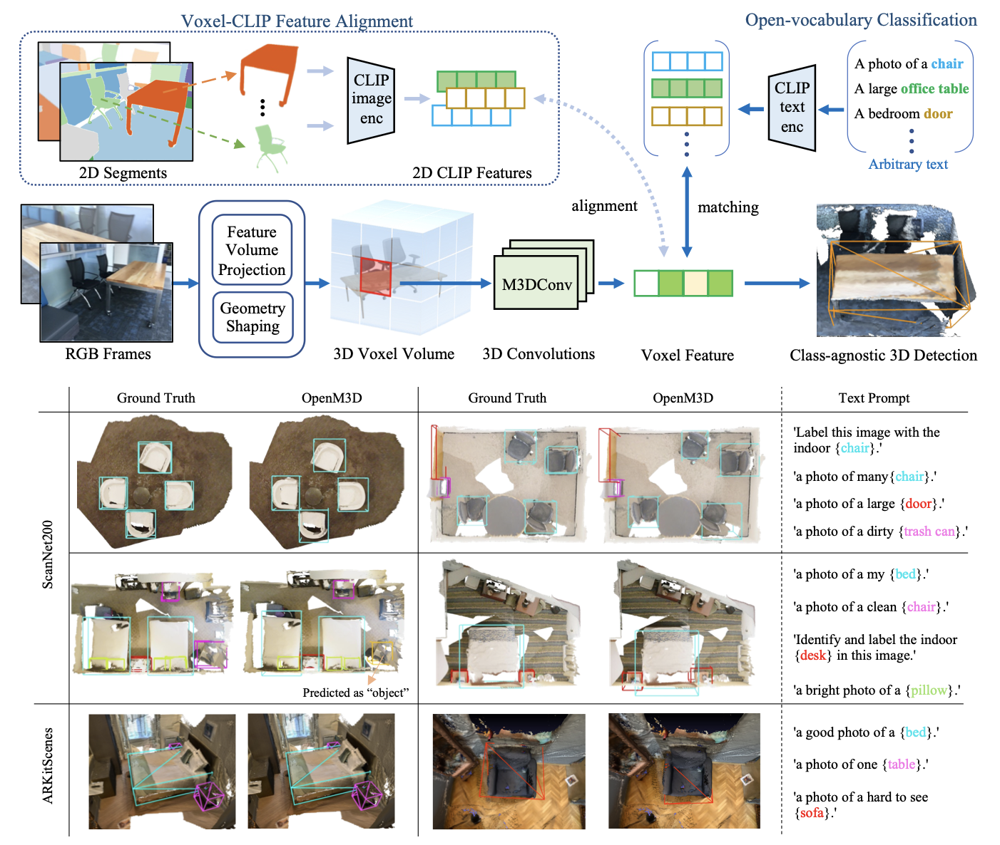

|
I am an incoming M.S. student in the Computer Science Department at Columbia University. My research interests lie in multi-modal perception and robotics. I am currently working under the supervision of Prof. Yunzhu Li, and previously conducted research with Prof. Min Sun during my M.S. at NTHU. peng-hao.hsu [at] columbia [dot] edu / GitHub / LinkedIn / X / Google Scholar |

|
|
Columbia |
NTHU |
NTHU |
|---|
|
[Sep. 2025] I will start my MSCS degree at Columbia University.
[Jun. 2025] One paper accepted to ICCV 2025. See you in Honolulu, Hawai'i🌺! [Dec. 2024] Got my MS degree from National Tsing Hua University @ College of Semiconductor Research. |
|
I'm interested in 3D visions, robotics, multi-model perception, manipulation and robot learning. Here are lists of research projects I have done: |
|

|
Peng-Hao Hsu*, Ke Zhang*, Fu-En Wang, Tao Tu, Ming-Feng Li, Yu-Lun Liu, Albert Y. C. Chen, Min Sun*, Cheng-Hao Kuo*, ICCV, 2025 website / video / paper / bibTex |
Last updated Jun 2025.